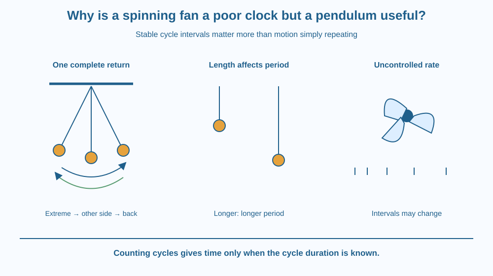

Explain why repeated motion becomes a useful clock only when its intervals are sufficiently stable. Define an oscillation and its period for a simple pendulum. Compare a classroom pendulum with an ordinary spinning fan without claiming that either is a perfect time standard.
A fan blade passes the same point again and again. A pendulum swings back and forth repeatedly. Both motions have recognisable cycles, yet one is usually a poor classroom timekeeper and the other can help compare equal time intervals.
The difference is not simply circular motion versus swinging. A rotating mechanism can be used in a good clock if its rate is controlled. The question is whether each cycle represents a stable interval under the conditions in which the device is being used.
Repeated motion is a starting point, not a complete clock design.
A periodic motion repeats its state after an interval. The period is the time for one complete cycle. For a simple pendulum, one full oscillation can be counted from a chosen extreme, across to the other extreme, and back to the starting extreme.
Going from one side to the other is only half a cycle. A counting method must define its starting and ending event clearly. Otherwise two observers can report different periods while watching exactly the same motion.
A simple pendulum consists of a small mass, or bob, suspended from a fixed support by a light string. When displaced slightly and released, it swings. Under small-angle conditions, its period depends mainly on the pendulum's length and the local gravitational environment.
Increasing length makes the period longer. Changing the bob's mass alone does not substantially change the ideal small-angle period. These statements describe a simplified model. Air resistance, support movement, string properties and large swings can alter real behaviour.
Small swings are useful because their periods change relatively little with modest changes in amplitude. A large swing is not simply a bigger version with exactly the same timing. A classroom pendulum should therefore use gentle displacements rather than dramatic arcs.
An ordinary fan can change speed as its controls, electrical supply or loading change. Starting and stopping also involve changing rates. Counting blade passages without checking speed stability does not provide a trustworthy time interval.
This does not mean rotating devices are intrinsically unsuitable for clocks. A controlled rotor can provide a stable cycle, and specialised timing systems do use controlled periodic processes. The comparison concerns an everyday fan operated without a validated timebase.
A pendulum also needs energy supplied to maintain its motion if it is to run as a clock. A freely swinging classroom bob gradually loses amplitude. A clock mechanism both maintains motion and counts cycles, while careful design limits disturbances that change the period.
Imagine marking a tally each time a cycle returns to the same state. The tally becomes elapsed time only if you know the duration represented by each cycle well enough for the task.
Draw two rows of tick marks. One has nearly equal spacing; the other has visibly changing spacing. Both repeat, but only the first supports a simple count-times-period estimate over the illustrated interval.
Then draw a pendulum at its left extreme, centre, right extreme, centre and left extreme again. Put one bracket around the entire sequence. This prevents a common mistake in which a half-swing is counted as a complete period.
The SVG shows the pendulum at its two extremes and centre, with arrows tracing a full return. A bracket states that one complete oscillation returns to the same extreme and direction of motion.
A second comparison shows a shorter and longer pendulum with the same gentle swing condition. The longer one is labelled as having a longer period in the simple model. A fan icon is paired with irregularly spaced cycle marks to illustrate an uncontrolled rate.
The drawing does not show a quantitative speed trace from a real fan or promise a perfectly constant classroom pendulum period.

Older pendulum clocks use a mechanism that maintains the swing and counts cycles. Their usefulness depends on controlling length, support and disturbances, not merely on hanging a weight from a string.
Modern devices often use other repeatable processes, including electronic oscillations. The shared idea is a stable timebase plus counting. The physical process can differ while the measurement principle remains similar.
A ceiling fan in a classroom is designed primarily to move air. It should not be touched, marked or approached to test timing. Photographs or a paper diagram provide all the comparison needed for this lesson.
Do this with an adult. Use a short existing string tied securely to a small soft object, a stable low support and a stopwatch. Keep it away from faces, pets, furniture edges and ceiling fans. Do not stand on a chair or swing a heavy object.
The result is an estimate for this setup. Timing several cycles reduces the relative effect of button delay, but it does not remove every error. If a safe support is unavailable, use the paper sequence instead.
Two students time the same pendulum. One counts each crossing of the centre; the other counts returns to the left extreme. Why can they obtain different numbers of counted events during the same interval?
Now consider replacing the bob with another soft object of similar shape but different mass. Explain why the simple small-angle model does not predict a large period change from mass alone, while acknowledging that real drag and support conditions can matter.
What is one complete pendulum oscillation?
Answer: C — A complete cycle returns the pendulum to the same stage of its motion.
Why is an ordinary fan a poor unverified timebase?
Answer: A — Changing fan speed changes the time represented by each counted rotation.
A pendulum takes an invented 12 seconds for ten cycles. What is the estimated period?
Answer: B — Dividing 12 seconds by ten complete cycles gives 1.2 seconds per cycle.
Design a timing instruction card for a pendulum investigation. Define one complete cycle, recommend gentle swings and state how to estimate period from a multi-cycle measurement.
Include a comparison with an ordinary fan: the problem is uncontrolled or changing rate, not a rule that circular motion can never keep time. Your card should distinguish a classroom measurement aid from a clock engineered to run continuously.
Counting perfectly is not enough if the interval being counted keeps changing. A clock combines a repeatable physical process with a counting mechanism. This explains why any repeated movement is only a candidate timebase until its stability has been examined.
A useful clock needs stable cycle intervals; a gentle pendulum can provide a repeatable period, but repeated motion alone does not guarantee reliable timekeeping.